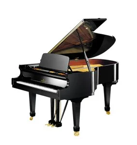

Müzik Aletlerimiz
Klasik Gitar
Gitar telli çalgı olarak sınıflandırılır - yani ses, iki sabit nokta arasında gerilmiş titreşen bir tel tarafından üretilir. Telleri bağırsak kirişi'nden yapılan gitar tarihsel olarak ahşaptan yapılmıştır. Çelik gitar telleri on dokuzuncu yüzyılın sonlarına doğru Amerika Birleşik Devletleri'nde piyasaya çıktı;[1] naylon teller 1940'larda geldi.[1] Gitarın ataları arasında gittern, vihuela, dört-kurs Rönesans gitarı ve beş sıralı barok gitar bulunur. Bunların hepsi modern altı telli enstrümanın gelişimine katkıda bulundu.

Keman
Keman (veya viyolon), viyola ve viyolonselin de bulunduğu violin ailesinin en yüksek tondan çalan, en küçük üyesidir. Dört teli vardır. Akort sesleri pesten tize sol, re, la ve mi'dir. Keman yayına arşe denir. Arşede yapay ya da gerçek at kılının yanı sıra ham misina olarak adlandırılan bir madde de kullanılabilir. Ayrıca yayını düzgünleştirmek ve sesi güzelleştirmek amacıyla arşeye reçine adı verilen madde sürülür. Reçine bala benzeyen sarı renkli katı bir maddedir. Almanca Geige, Fransızca violon, İngilizce violin, İtalyanca violino'dur. Uzunluğu 60 cm'dir. Yayla çalınan telli bir çalgıdır. Notası, ikinci çizgi Sol açkısı ile yazılır. Orkestralarda, genel olarak (Solo, I, II) üç partisi bulunur. Solo ve eşlik görevi verilir (özellikle bir solo çalgıdır). Hiçbir çalgıda olmayan ses rengiyle, çok zengin bir anlatım gücü vardır.

Piyano
Piyano, İtalya'da Bartolomeo Cristofori tarafından 1700 yılı civarında icat edilmiş (tam olarak yıl belirsizdir) akustik, tuşlu bir müzik aletidir. Piyanoda ses, teller vasıtasıyla elde edilir. Piyanonun tuşlarına basıldığında içindeki tahta çekiç tellere vurarak sesi oluşturur. Tahta çekicin tellere vurmasından dolayı piyano bazen vurmalı telli çalgı olarak da sınıflandırılır. Piyano klasik ve caz müzikte yaygın olarak kullanılır. Solo performanslar, ansambl, oda müziği, eşlik, bestecilik ve prova için oldukça uygun bir enstrümandır. Piyano taşınabilir bir enstrüman olmamasına ve genelde pahalı olmasına rağmen çok yönlülüğü ve aynı anda birçok yerde bulunma özelliği ile dünyanın en yaygın olarak kullanılan enstrümanlarından biridir.
